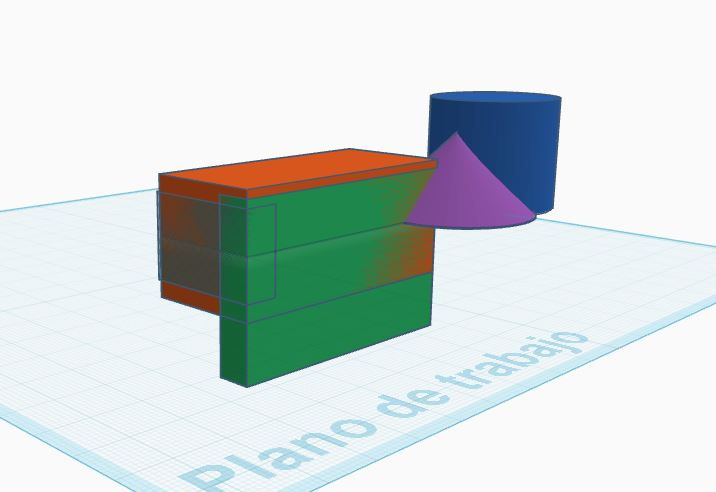

Assistive product for people with reduced hand mobility
The Universal Adaptive Gripper is an innovative assistive device designed for people with reduced hand mobility. Its purpose is to facilitate the manipulation of everyday utensils such as spoons, forks, pencils and other small objects.
Combining ergonomics, functionality and simplicity, this gripper allows users to perform daily tasks with greater independence and comfort, significantly improving their quality of life.
Designed in TinkerCAD with ergonomic and functional geometry:

Allows users to perform daily tasks without depending on others
Stable and ergonomic design that prevents falls and accidents
Ergonomic grip that reduces fatigue and pain in hand and arm
Works with multiple utensils thanks to its universal slot
Low-cost solution compared to other assistive devices
Simple and intuitive design with no complex learning curve